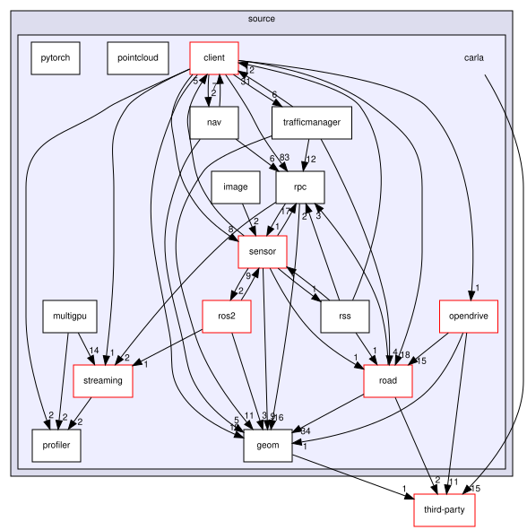
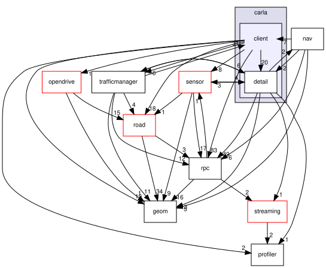

LibCarla¶
所有模块之间的调用关系图：

第三方库包括：simplify （使用二次曲面减少网格三角形）、pugixml （轻量级的 C++ XML 处理库）、odrSpiral （OpenDrive应用程序中计算螺旋的方法）、moodycamel （C++11实现的一个多生产者、多消费者的无锁队列 ）、marchingcube （从给定的有符号距离函数重建三角形网格）。
!!! 笔记
Marching Cubes(三维规则数据场等值面生成、从三维体素中提取三角形网格)。有符号距离函（Signed Distance Function, SDF）, 指的是给定一个点的坐标, 返回这个点与某一面的最短距离。如果这个距离是负数, 则说明在面内, 是正数则说明在面外, 如果是0, 则刚好在面上，SDF的signed就是由此而来。pugi意思是帅气的handsome。
Visual Studio 工程所在地目录为：Build/libcarla-visualstudio/。
客户端¶
各个模块之间的调用关系图 ：

黑色框表明当前显示的是类文档。红色边线的方框表示有文档的结构体或类，该类未展示全部的继承/包含关系。实心箭头指示公有继承。编译后的安装目录位于：PythonAPI\carla\dependencies\。
CMakeLists.txt¶
file GLOB 命令用于将指定目录下的所有文件匹配到一个变量中。
install 用于指定在安装时运行的规则。
DESTINATION 定义了安装的路径，使用 CMAKE_INSTALL_PREFIX 来定义安装路径（在Util\BuildTools\BuildLibCarla.bat中的-DCMAKE_INSTALL_PREFIX中定义，即PythonAPI\carla\dependencies\），就要写成相对路径，那么安装后的路径就是${CMAKE_INSTALL_PREFIX}/
-
add_library：用于向项目添加一个库文件,并定义其类型(静态库
STATIC或共享库)。carla_client${carla_target_postfix}_debug对应：carla_client_debug.lib -
target_include_directories： 指定目标（exe或者so文件）需要包含的头文件路径
-
target_link_libraries：指定目标（exe或者so文件）需要包含的库
-
set_target_properties：可以设置编译标记（区分调试还是发布）
服务端¶
编译后的安装目录位于：Unreal\CarlaUE4\Plugins\Carla\CarlaDependencies\。